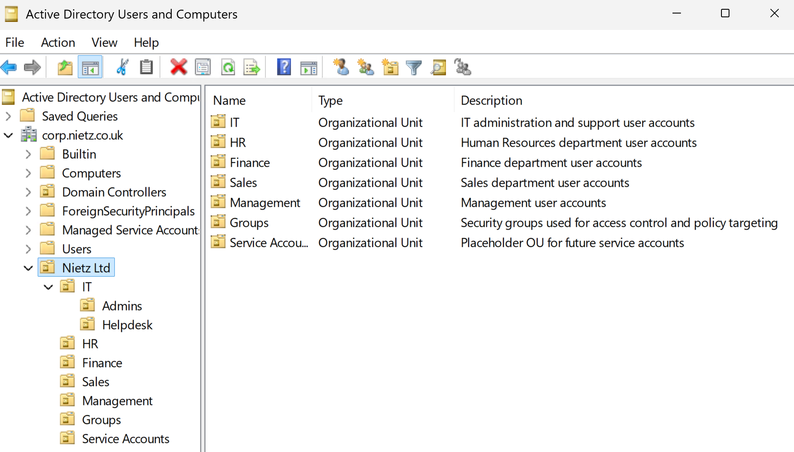
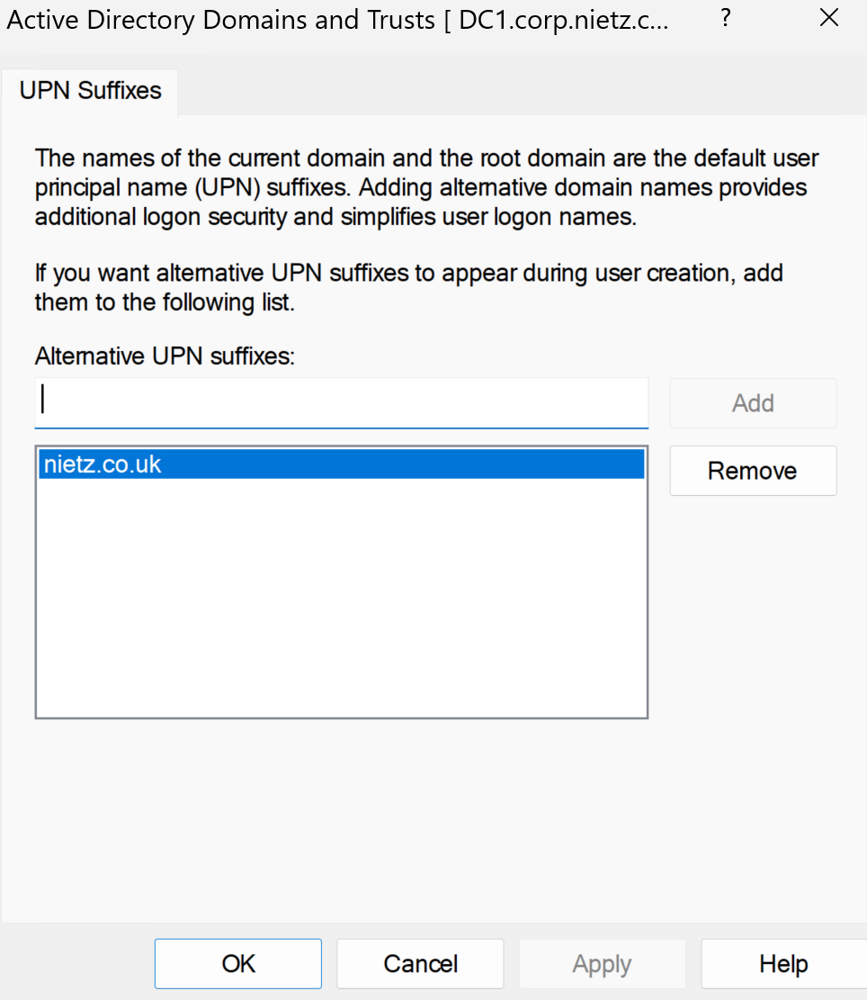
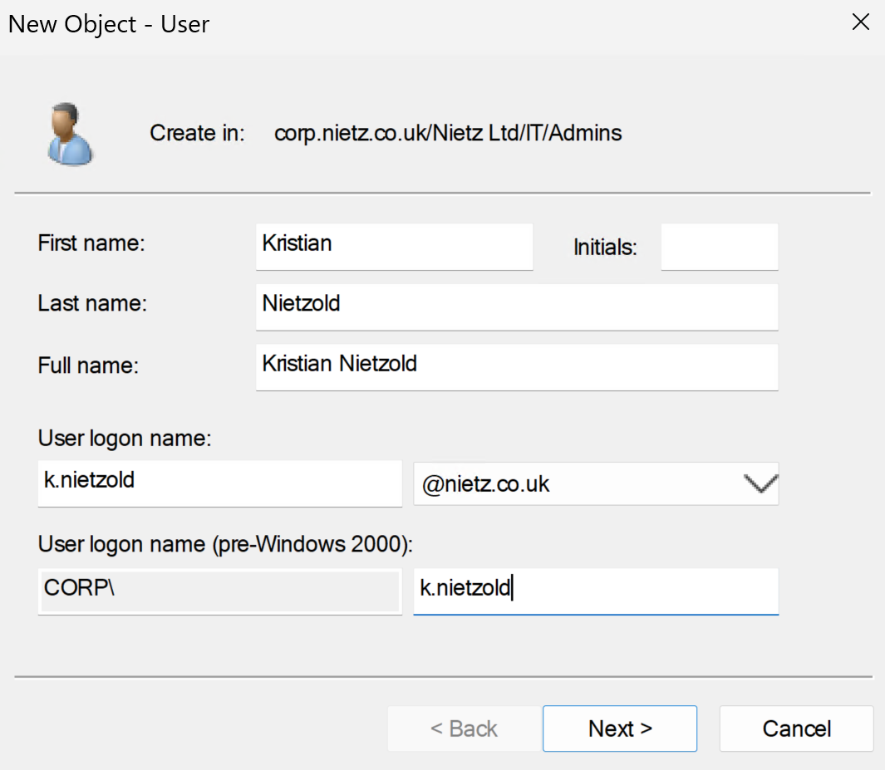
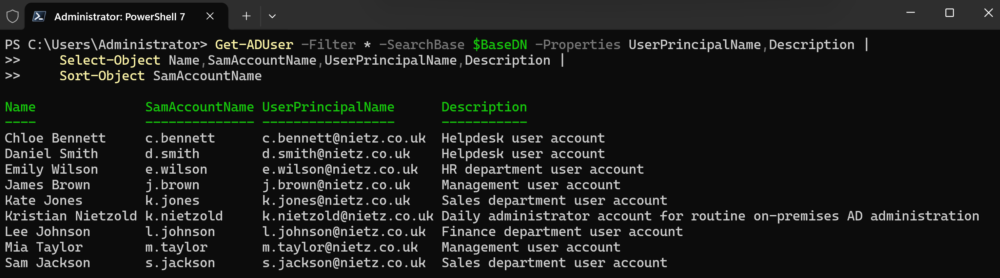
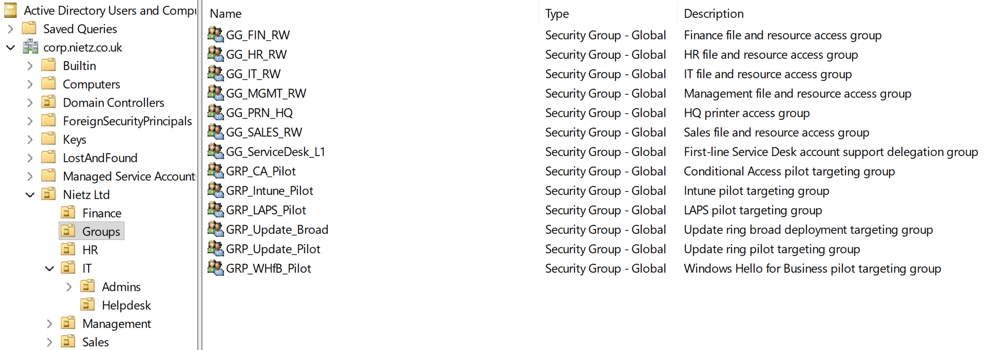
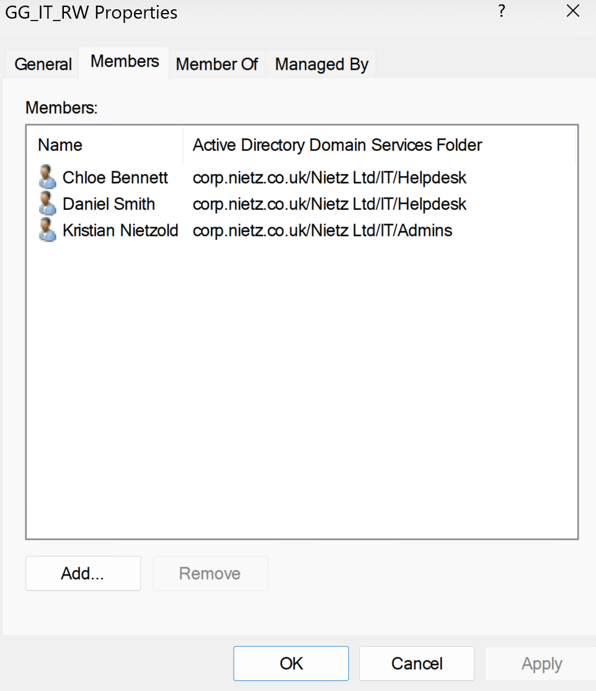
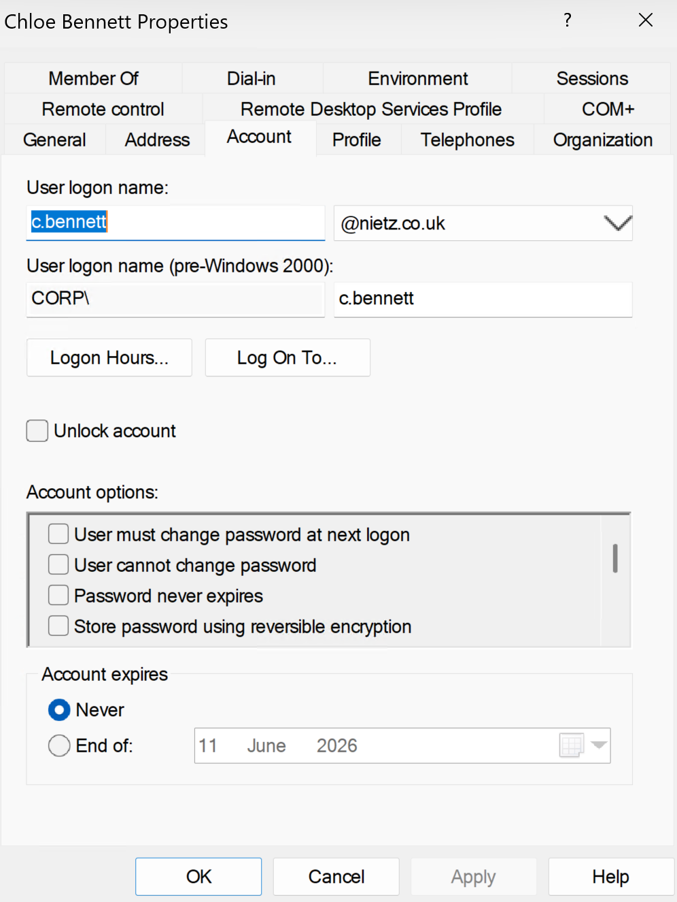
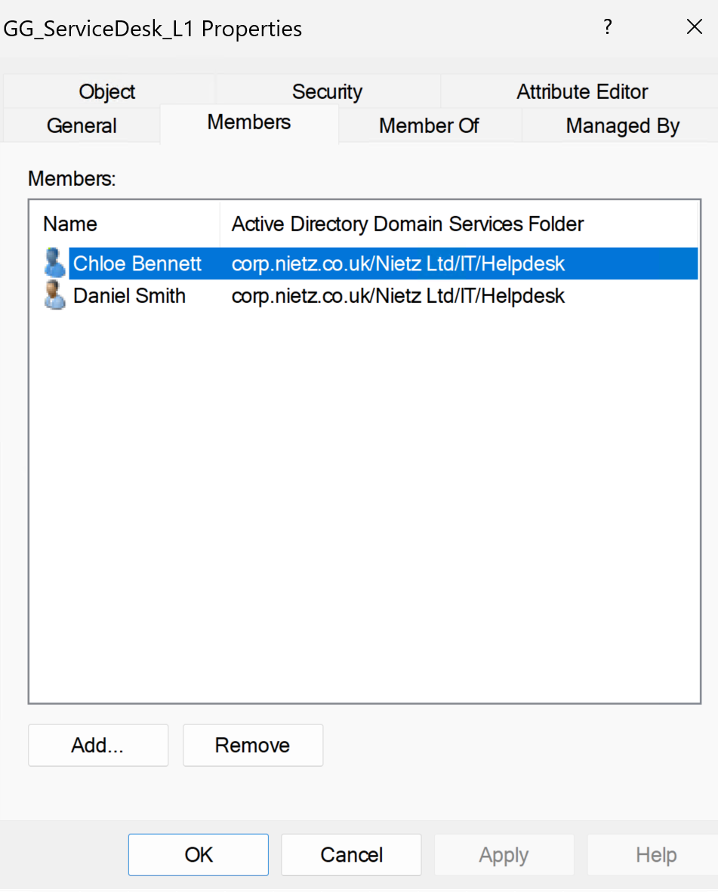
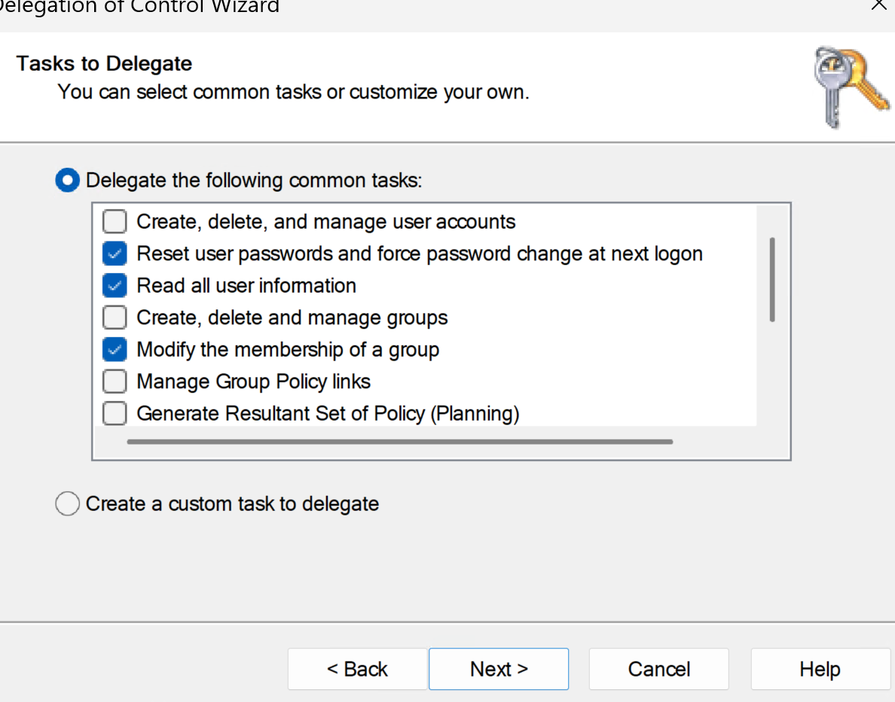
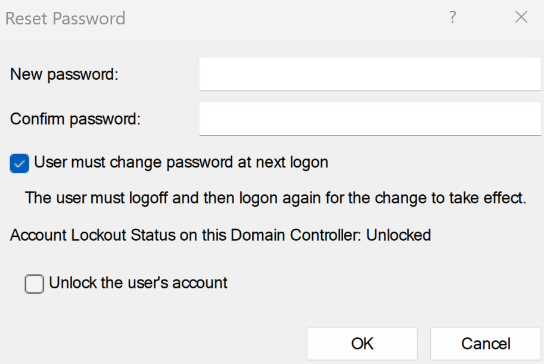

Lab 03: AD Users, Groups and Passwords
Created the core Active Directory OU, user and group structure for Nietz Ltd; configured the public UPN suffix nietz.co.uk; and validated account administration, group membership and limited Service Desk delegation.
Overview
In this lab, I extended the existing corp.nietz.co.uk domain by creating the organisational structure needed for department-based administration and future file share, Group Policy, Microsoft 365, and hybrid identity labs.
This builds directly on Lab 01 and Lab 02: DC1 is already the domain controller, and CL1 is already joined to the domain.
Objective
The objective was to create a realistic Active Directory user and group baseline for Nietz Ltd, using @nietz.co.uk as the user sign-in suffix so the on-premises accounts align with future Microsoft 365 and Entra ID integration.
Environment
| Component | Value |
|---|---|
| Company | Nietz Ltd |
| Domain Controller | DC1 |
| Domain Controller IP | 192.168.10.10/24 |
| Client | CL1 |
| AD Domain | corp.nietz.co.uk |
| NetBIOS Name | CORP |
| Public / Tenant Domain | nietz.co.uk |
| User UPN Suffix | nietz.co.uk |
Configuration
1. Organisational Unit Structure
I created the core OU structure for Nietz Ltd so users could be organised by function and managed consistently in later labs.

2. Alternative UPN Suffix
I added nietz.co.uk as an alternative UPN suffix so users can sign in with the same public domain that will be used for Microsoft 365.

nietz.co.uk.corp.nietz.co.uk, but users sign in as user@nietz.co.uk to align with Microsoft 365 and future hybrid identity.3. Administrative User
I created the daily administrator account k.nietzold@nietz.co.uk for routine administration tasks.

@nietz.co.uk UPN suffix.4. Department Users
I created the core operational users for Helpdesk, HR, Finance, Sales, and Management using @nietz.co.uk UPNs and department descriptions.

5. Security Groups
I created department access groups, a printer access group, and pilot targeting groups that can be reused by later labs.

6. Group Membership
I assigned users to the correct department groups and prepared selected pilot group memberships so later labs can reuse the same structure for file permissions, printer access, Microsoft 365, and Intune-related targeting.

7. Password and Account Settings
I configured basic password and account settings for the new users and confirmed that account properties were set consistently.

8. Service Desk L1 Delegation Group
I included GG_ServiceDesk_L1 as the first-line Service Desk delegation group and added Chloe Bennett and Daniel Smith as members.

9. Delegated Service Desk Permissions
I delegated controlled first-line AD support permissions to GG_ServiceDesk_L1: password reset, read user information, and modify group membership.

GG_ServiceDesk_L1.10. Delegated Password Reset Validation
I validated the delegation by opening the password reset workflow as Chloe Bennett using her delegated Service Desk permissions.

Validation
The lab was validated when the Nietz Ltd OU structure existed in Active Directory, nietz.co.uk was available as an alternative UPN suffix, users were created with @nietz.co.uk sign-in names, security groups were present, and group membership matched the intended department structure.
Delegation was also validated by confirming that GG_ServiceDesk_L1 contained the intended support users, that common first-line support tasks were delegated to the group, and that Chloe Bennett could access the password reset workflow using delegated permissions.
Key Technical Outcomes
This lab demonstrated how on-premises Active Directory can use an internal AD domain while still giving users a public, Microsoft 365-aligned UPN suffix for sign-in.
It also established a group-based access and delegation model that future labs can reuse for file permissions, mapped drives, printer access, Microsoft 365 administration, Service Desk tickets, and controlled pilot testing before wider rollout.
Summary
- I created the Nietz Ltd OU structure in Active Directory.
- I configured
nietz.co.ukas the alternative UPN suffix. - I created the daily admin and operational user accounts using
@nietz.co.uksign-in names. - I created department, printer, and pilot security groups.
- I assigned users to the correct groups for later permissions, printer access, Microsoft 365, and Intune-related labs.
- I created the
GG_ServiceDesk_L1delegation group and added first-line support users. - I delegated controlled first-line support permissions for password reset, user information review, and group membership updates.
- I validated users, groups, UPN suffixes, account settings, group membership, and delegated Service Desk password reset access using Active Directory administration tools.